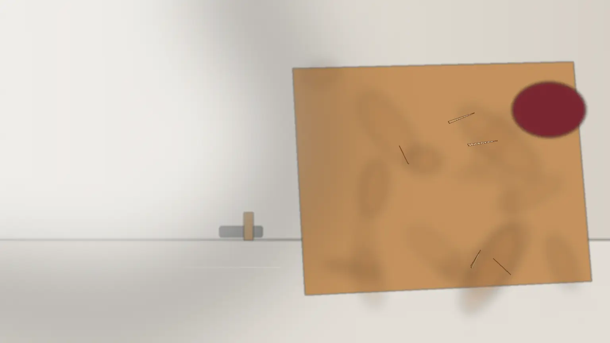
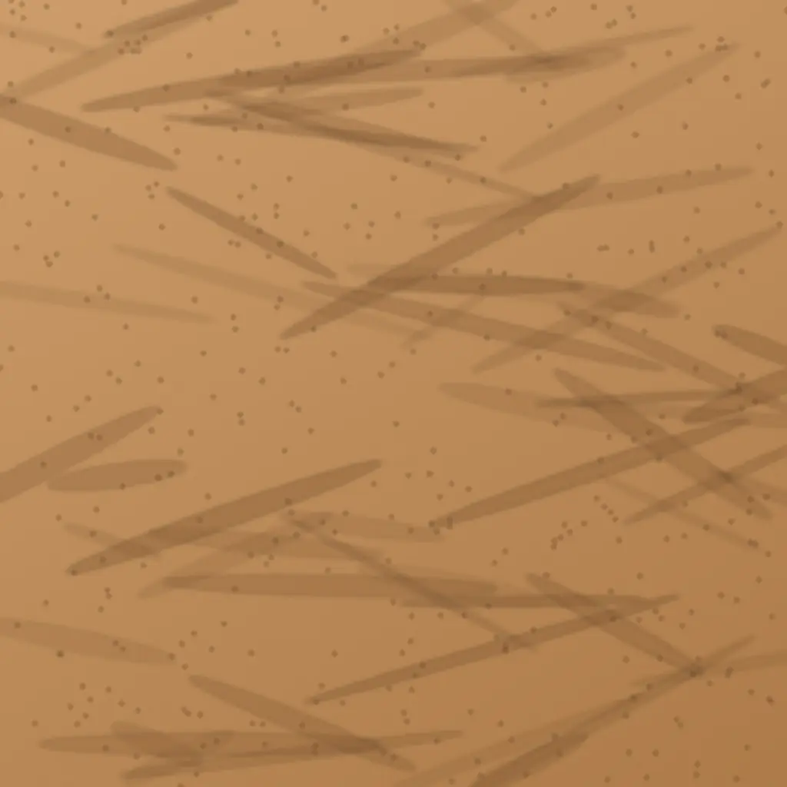
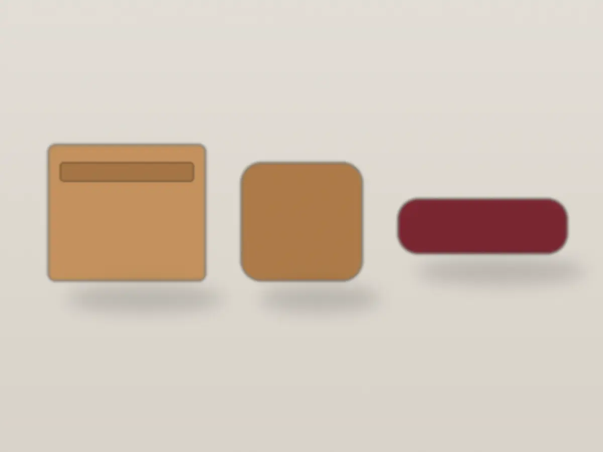
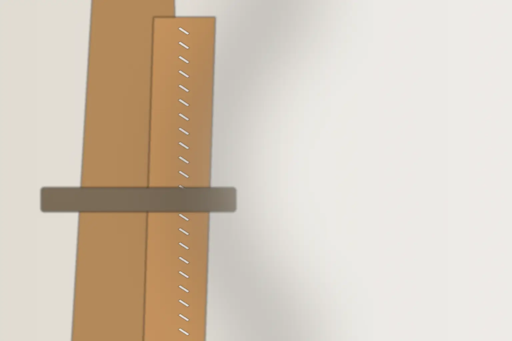
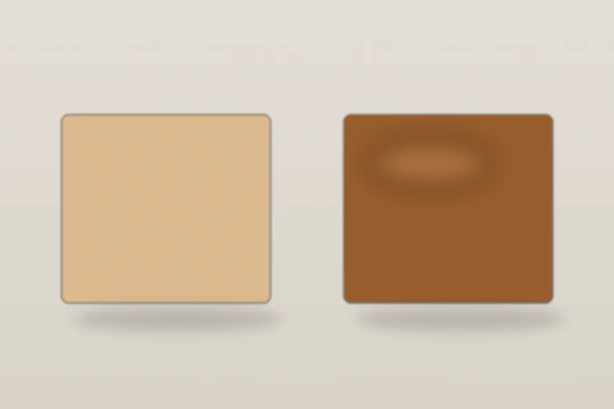

工房のことAtelier

傷も、しわも、この革の履歴。
植物なめしの一枚革を、2本の針で手縫いする小物の工房です。傷のある場所も、避けずに裁って使います。
- 既製の小物
- 9,900円〜（税込）
- オーダー
- 既製の値段＋型紙代 5,500円〜
- 期間
- 相談からお渡しまで、約6〜8週
返信は2営業日以内。何を作るか決める前の相談も受けています。
- 1傷牛が生きていたときの擦り傷。避けずに裁ちます
- 2しわ革の伸び縮みの跡。表面を塗り固めずに残します
- 3ムラ色の濃淡。使ううちに飴色の中へ沈みます
つくるものGoods
一枚革から、手のひらの道具を3つ。
名刺入れ・小銭入れ・ペンケース。どれも同じ一枚の革から裁つので、傷の入り方と色は一点ずつ違います。


値段はすべて税込。仕立ては3品とも、植物なめしの牛革を2本の針で手縫いし、切り口を蜜蝋で磨きます。
- a名刺入れ14,300円〜
- b小銭入れ12,100円〜
- cペンケース9,900円〜
寸法・いまある色は【要確認】。大きさを変えたいときはオーダーで承ります。

考え方Idea
傷を避けて、裁たない。
生きていたときの傷や、しわ、色のムラ。多くの工房は、それを避けて革を裁ちます。ムラでは、傷のある場所も使います。一枚の革を無駄にしないためと、使う人の手に渡ってから増える傷と、同じものだと考えているからです。
- i穴を開ける菱目打ちで、縫い穴を一つずつ開けます
- ii縫う2本の針で、ひと針ずつ手で縫います
- iii磨く切り口を磨いて、蜜蝋で仕上げます
傷の位置は一点ずつ違います。気になる傷があれば、裁つ前に写真でお見せします。

変わり方Aging
新しいときが、いちばん淡い。
植物なめしの革は、手の脂と日の光で、薄茶から飴色へ深くなります。表面を塗り固めていないので、傷も艶の中に沈んでいきます。
新しいとき1年3年
色の目安です。変わり方は、使い方と置き場所で大きく違います。
オーダーと相談Order
作る前に、話を聞かせてください。
大きさや仕切りを変えたいとき、手持ちの道具に合わせたいときは、オーダーで。週ごとの進め方と、品ごとの値段は、次のページにまとめています。
オーダーの進め方と料金を詳しく見る